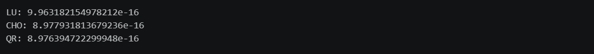

本期内容
- 矩阵乘法复杂度
- 线性方程组求解
- 矩阵分块
- Pandas流式读取
矩阵乘法复杂度
向量 × 向量（点积）
- 计算 \( u^T v = \sum u_i v_i \)
- 时间复杂度：O(n)
矩阵 × 向量（GEMV）
- 计算 \( y = A x \)，\( A \in \mathbb{R}^{m \times n} \)
- 相当于 m 次长度为 n 的点积
- 时间复杂度：O(mn)，方阵时为 O(n²)
矩阵 × 矩阵（GEMM）
- 计算 \( C = AB \)，\( A \in \mathbb{R}^{m \times k}, B \in \mathbb{R}^{k \times n} \)
- 共 \( m \times n \) 个元素，每个元素需 k 次点积
- 时间复杂度：O(mnk)，方阵时为 O(n³)
- 若 n 扩大 10 倍，耗时变为 1000 倍——这是分布式计算的核心驱动力
矩阵计算实用技巧
优先计算维度较小的操作
- 多个矩阵连乘时，先合并维度小的部分进行计算，可显著降低中间结果的规模。
- 例：计算 \( ABC \)，若 B 维度远小于 A 和 C，先算 \( BC \) 再左乘 A，而非先算 \( AB \)。
不要算矩阵的逆
- 直接求逆存在两大问题：
- 数值不稳定：容易放大舍入误差
- 计算效率低：O(n³) 且常数大，稀疏矩阵求逆后通常变稠密
- 正确做法：用矩阵分解 + 回代求解线性方程组。
利用特殊矩阵结构减少计算量
对角矩阵
- 左乘对角矩阵：\( WA \)，W 为 \( n \times n \) 对角矩阵
- 等价于将 W 的对角线元素逐列乘到 A 的对应行上
- 复杂度：O(np)，而非 O(n²p)
- 右乘对角矩阵：\( AW \)，W 为 \( p \times p \) 对角矩阵
- 等价于将 W 的对角线元素逐行乘到 A 的对应列上
- 复杂度：O(np)
其他特殊结构
- 对称矩阵、三角矩阵、稀疏矩阵等均可利用其结构大幅压缩计算量。
将多个向量运算合并为矩阵运算
- 需要计算 \( Ax_1, Ax_2, \dots, Ax_p \) 时，先将所有向量拼成矩阵 \( X = [x_1 \, x_2 \, \dots \, x_p] \)，再统一计算 \( AX \)。
- 原理：理论复杂度相同，但软件层面对矩阵运算有高度优化（如 BLAS 库），实际速度远快于循环逐个计算。
- 同理，求解 \( A^{-1}x_1, \dots, A^{-1}x_p \) 时，统一调用
np.linalg.solve(A, X)。
线性方程组求解
直接求逆的缺点
求解线性方程组 \( Ax = b \) 时，理论上解为 \( x = A^{-1}b \)，但实际计算中应避免显式求逆：
- 数值不稳定性：矩阵求逆极易受浮点数舍入误差影响。若 \( A \) 条件数很大（如多重共线性），求逆会急剧放大误差。
- 计算效率低：求逆时间复杂度 \( O(n^3) \) 且常数很大。此外，稀疏矩阵的逆通常是稠密的，可能撑爆内存。
因此，正确思路是先对 \( A \) 做矩阵分解，再通过前向/后向替换求解（替换步骤仅需 \( O(n^2) \)）。
LU 分解
- 适用场景：\( A \) 为一般的非奇异方阵
- 分解形式：\( A = LU \)（L 下三角，U 上三角）
- 求解过程：先解 \( Ly = b \)，再解 \( Ux = y \)
- 复杂度：约 \( \frac{2}{3}n^3 \) FLOPs
- 特点：通用性强，比直接求逆更高效稳定
Cholesky 分解
- 适用场景：\( A \) 对称正定，如 OLS 中的 \( X^T X \)
- 分解形式：\( A = LL^T \)（L 下三角）
- 求解过程：先解 \( Ly = b \)，再解 \( L^T x = y \)
- 复杂度：约 \( \frac{1}{3}n^3 \) FLOPs，是 LU 分解的一半
- 特点：利用对称性，效率更高
QR 分解
- 适用场景：OLS 回归等对精度要求高的场景
- 分解形式：\( X = QR \)，代入正规方程后可避开 \( X^T X \) 的计算
- 优势：完全避免计算 \( X^T X \)，避免条件数被平方放大，数值稳定性极高（R 语言
lm()、Pythonscipy.linalg.lstsq底层使用） - 代价：当 \( n \gg p \) 时，计算量约为 Cholesky 方案的 2 倍
总结
| 方案 | 速度 | 稳定性 | 推荐场景 |
|---|---|---|---|
| LU 分解 | 中等 | 中等 | 一般方阵 |
| Cholesky 分解 | 快 | 中等 | 对称正定矩阵（如大规模 ML） |
| QR 分解 | 较慢（约 2 倍） | 最高 | 经典统计推断、精度优先 |
代码实现
Step1:生成数据
|
|
Step2:矩阵分解与方程组计算
|
|
结果如下图所示：

矩阵分块
为什么需要分块？
当矩阵 \( X \) 过大（如 1TB）无法装入单机内存时，将其切成小块，分配给不同节点存储和计算。
核心原理
只要分块维度对齐，分块矩阵的加法和乘法与普通标量运算规则一致。
以按行分块为例：
\[ X = \begin{bmatrix} X_1 \\ X_2 \end{bmatrix}, \quad X^T X = X_1^T X_1 + X_2^T X_2 \]Map-Reduce 思想
- Map：各节点在本地独立计算 \( X_i^T X_i \)
- Reduce：主节点拉取各节点结果并求和
核心意义
将可能内存溢出的大矩阵乘法拆解为互不干扰的并行子任务，每台机器只处理自己的数据块，最后汇总小规模结果——这是分布式计算处理海量数据的基础。
代码实现
Step1:生成数据
|
|
Step2:定义分布式计算函数
|
|
Step3:分布式计算
|
|
Step4:验证结果
|
|